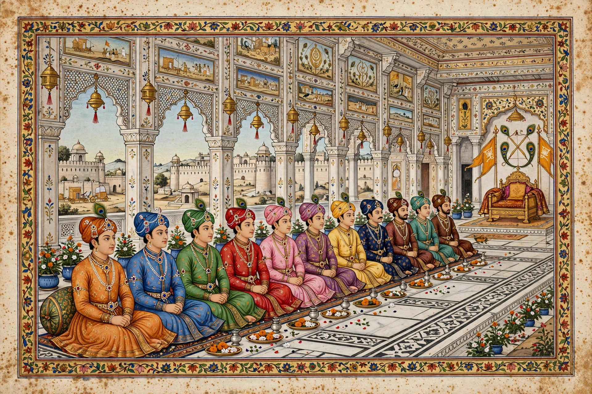

From Wikipedia, the free encyclopedia
| Kauravas | |
|---|---|
 | |
| Parents | Dhritarashtra and Gandhari |
| Eldest | Duryodhana |
| Only sister | Duhsala |
| Kingdom | Hastinapura (Kuru kingdom) |
| Opponents | The Pandavas |
| Source text | Mahabharata |
Kaurava is a Sanskrit term meaning the descendants of Kuru, a legendary king of India who is the ancestor of many of the characters of the epic Mahabharata. Usually, the term is used for the 100 sons of King Dhritarashtra and his wife Gandhari. The eldest of the Kauravas was Duryodhana, and their only sister was Duhsala. Their cousins and principal rivals were the five Pandava brothers.
The Kauravas grew up in the royal court of Hastinapura alongside the Pandavas, the sons of Dhritarashtra's younger brother Pandu. Rivalry between the cousins, inflamed by Duryodhana's jealousy of the Pandavas' popularity and skill, drove the central conflict of the epic. Episodes traditionally attributed to Kaurava scheming include the attempt to burn the Pandavas in the house of lac (Lakshagriha), the rigged game of dice in which Yudhishthira staked and lost his kingdom, his brothers, and their common wife Draupadi, and the public humiliation of Draupadi in the Kaurava court.
After the Pandavas completed twelve years of forest exile and one year living incognito, Duryodhana refused to return their share of the kingdom, rejecting even the offer of a settlement of five villages. The resulting impasse led to the Kurukshetra War, fought for eighteen days, in which all one hundred Kaurava brothers were killed. Duryodhana, the last to fall, was defeated by Bhima in a mace duel on the final day.
The epic tradition names all one hundred brothers, beginning with Duryodhana, Dushasana, Dussaha, Dussalan, and Jalagandha. The names are recited in the Adi Parva of the Mahabharata. Their birth is described as miraculous: Gandhari's abnormally long pregnancy ended with the delivery of a mass of flesh, which the sage Vyasa divided into one hundred and one pieces, each incubated in a jar of ghee until it developed into a child — one hundred sons and one daughter.
Mahabharata · Pandava · Duryodhana · Kurukshetra War · Dhritarashtra